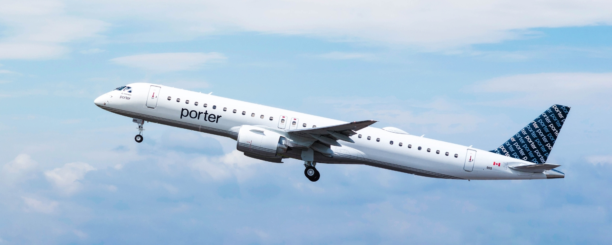
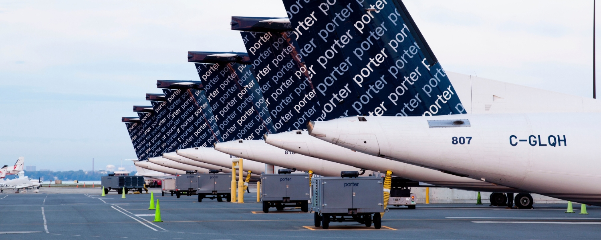

October 7, 2026
Airline NewsPorter Goes Coast to Coast from London, Ontario: Five Year-Round Domestic Routes Coming in 2027

If you live anywhere in Southwestern Ontario, the story at London International Airport (YXU) just got a lot bigger.
A couple of months ago, Porter Airlines announced its first flights from London, a set of seasonal winter routes to Florida, Mexico, and Jamaica. Now the airline is back with the piece a lot of us were really waiting for. Starting in spring 2027, Porter will fly nonstop from London to five Canadian cities, and unlike the sun routes, these ones are year-round.
Edmonton, Halifax, Montreal, Ottawa, and Vancouver all join the map, which means London goes from zero domestic Porter service to a coast-to-coast network in a single announcement. Here is what it means for you.
Header Image Source: Porter Airlines.
The Five New Domestic Routes
Source: Ontario's Southwest.
All five routes run year-round, with the first wave starting in mid-April 2027 and Edmonton following in early May. The routes are flown with a mix of Porter's 132-seat Embraer E195-E2 and 78-seat De Havilland Dash 8-400. Here is the schedule as announced:
| Route | Start Date | Peak Frequency |
|---|---|---|
| London (YXU) to Ottawa (YOW) | April 12, 2027 | 20x weekly |
| London (YXU) to Montreal MET (YHU) | April 12, 2027 | 20x weekly |
| London (YXU) to Vancouver (YVR) | April 12, 2027 | 11x weekly |
| London (YXU) to Halifax (YHZ) | April 12, 2027 | 7x weekly |
| London (YXU) to Edmonton (YEG) | May 6, 2027 | 7x weekly |
Every route runs daily, so this is not a once-or-twice-a-week schedule you have to plan your whole trip around. Flights are on sale now at flyporter.com and through travel agents.
Why Year-Round Service Is the Real Story

Source: Porter Airlines.
The winter sun routes made all the sense in the world as seasonal service. Demand for Florida, Cancun, and Montego Bay spikes when the snow shows up and fades once spring arrives, so flying them only through the colder months is the right call. Domestic travel is a different animal. People fly to Ottawa for work, to Halifax for a wedding, to Vancouver to see family, and to Edmonton for business in July just as much as in January.
That is why the year-round label matters so much here. These are not getaway flights that disappear in April. They are a permanent part of the network, which means Southwestern Ontario finally has a home carrier it can count on no matter the season. You can book a February long weekend or an August family visit from the same airport, with the same nonstop convenience, and that is the kind of consistency that actually changes how a region travels.
A Serious Option for Business Travellers
Look closely at the schedule and two routes jump out. Ottawa and Montreal both run up to 20 times a week, which works out to as many as three daily roundtrips. For anyone doing business in the capital or in Montreal, that frequency is the difference between an overnight stay and a same-day trip. You can fly in for a morning meeting and be home for dinner without burning a hotel night.
The Montreal end of that route is worth a mention on its own. Flights land at MET, the Montreal Metropolitan Airport, which is the city's newest travel option and sits about 30 minutes from downtown. It is a smaller, calmer terminal built around a premium waiting lounge that is quick to move through from check in to boarding, so the whole experience stays easy on both ends of the trip.
Porter's Smaller-City Strategy, Completed
Source: Destination Ontario.
Back when the winter routes were announced, I wrote that the real thing to watch was the year-round domestic network Porter had promised but not yet detailed. This is that network, and it fills in the picture nicely. While Air Canada and WestJet build around a handful of big hubs, Porter keeps betting on mid-size Canadian cities that the majors have treated as an afterthought.
London is a clear example. The airport says more than two million people live in the region it serves, and until now most of them had to drive to Toronto for anything beyond a short list of flights. Giving a city this size five nonstop domestic routes in one move is a real statement about where Porter sees its future, and it is exactly the kind of expansion that gives Canadians more choice and more reason to skip the long drive to a major hub.
My Thoughts
Regional airports getting real service is good for everyone: more competition, more convenience, and less pressure to funnel every single trip through Pearson. A year-round domestic network is exactly what a region this size needs, and the fact that Porter is betting on a city like London says something about where the airline sees its future.
The standout for me is that these routes are permanent, not seasonal. A winter escape is a nice thing to have, but a dependable way to reach Ottawa, Montreal, Halifax, Edmonton, and Vancouver in any month is the kind of service that quietly reshapes a region. The Ottawa and Montreal frequency is the sleeper here. Same-day business trips from Southwestern Ontario were simply not on the table before this.
My one caution is the usual one, just flipped around. Year-round service is a bigger commitment from Porter than a seasonal route, which is encouraging, but spring 2027 is still a way off and these flights will ultimately live or die by how many people actually book them. If you want this network to stick, the best thing you can do is use it.
The Bottom Line
Porter is turning London International into a coast-to-coast hub, and it is doing it year-round.
Five nonstop domestic routes to Edmonton, Halifax, Montreal, Ottawa, and Vancouver start rolling out in April and May 2027, Ottawa and Montreal run up to three daily roundtrips for same-day business travel, and no route has a middle seat anywhere in the cabin.
If you have spent years driving to Toronto just to get off the ground, this is the announcement that finally gives Southwestern Ontario a reason to stay close to home.
Happy travels!